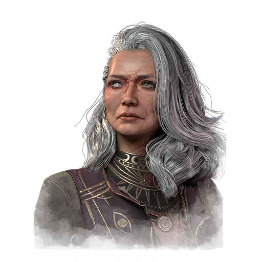

奥罗拉·星尘 Aurora Stardotter
- 性别
- 女性
- 出身
- Terra Primus
- 演员
- Claire Vousden (Voice Actress)
背景故事
《瑞兰王改革 auroran 圣典》节选：
"于是，在 Ultracapitalis 的中心，议会下令处死 Aurora Stardotter 以及被俘的 Searchers（搜寻者）。他们被戴着镣铐押至一场盛大庆典，在众目睽睽之下接受宗教裁判所的审讯，以供民众取乐。议会沾着血的手发誓：总有一天，所有 Searchers 都将被毁灭，正如初代 Searcher 很久以前已被毁灭那样。
然而，就在行刑开始之际，一场巨大的灾难降临 Ultracapitalis，而它在 Celestians（天界）之中名为 Judgment（审判）。Judgment 说道：'你们这些统治 Terra Primus（初地）的人，竟胆敢觊觎诸神的力量；而你们这些追随者，竟纵容他们。既然如此，你们所有人都已被判定！'
一道巨大的光束自 Judgment 而来，将整座城市撕成两半。数据核与 preon（普瑞昂）数据流被抹除，民众的 sentio 电路陷入沉寂。
议会在灼灼光芒中被击倒，孩子如此，母亲如此，Searchers 亦如此。
从毁灭中，Aurora 重生；她目睹了 Ultracapitalis 昔日矗立之处如今只剩废墟。于是，她去寻找最后的 Searchers，因为自从她抛弃父母、披上 Stardotter 之名起，他们便是她的家人。"（Marika's Declaration 9:14-20）
"她一路前行，倒伏者众多——有人死于 Judgment，有人死于为土地与面包而战的野蛮人。她在一处洞穴中寻求庇护时，发现了八名她曾以 Searchers 相识的可怜人。
她说道：'站起身来吧，Searchers——'"
专属技能
通用技能 任意逃生者均可使用
寻宝专家
Artefact Hunter
执念之缚
Bound by Obsession
黑暗感知
Dark Sense
坚持到底
Down to the Last
似曾相识
Déjà Vu
希望
Hope
同族
Kindred
最后站立
Last Standing
轻装上阵
Lightweight
不抛弃任何人
No One Left Behind
过度自信
Overconfidence
掠夺者直觉
Plunderer's Instinct
预兆
Premonition
韧性
Resilience
滑溜之躯
Slippery Meat
小猎手
Small Game
背脊发凉
Spine Chill
这不是真的
This Is Not Happening
硬跑者
Tough Runner
我们能行
We'll Make It
求生意志
Will to Live
附加品
- 暂无数据。